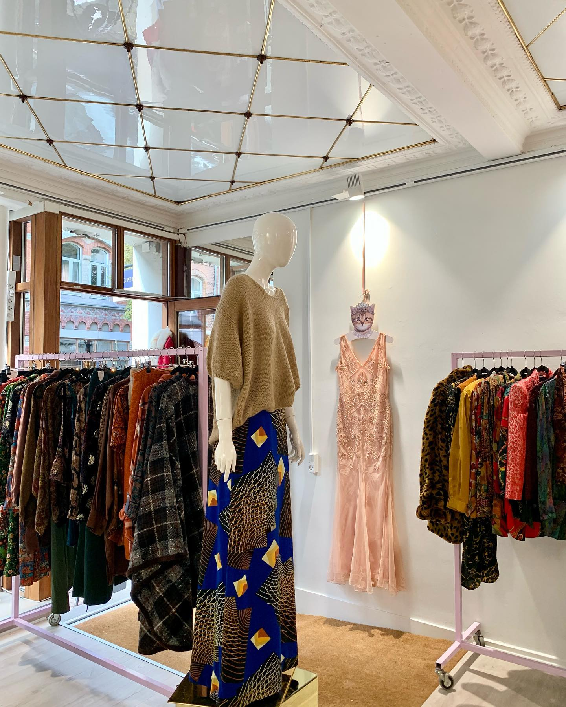
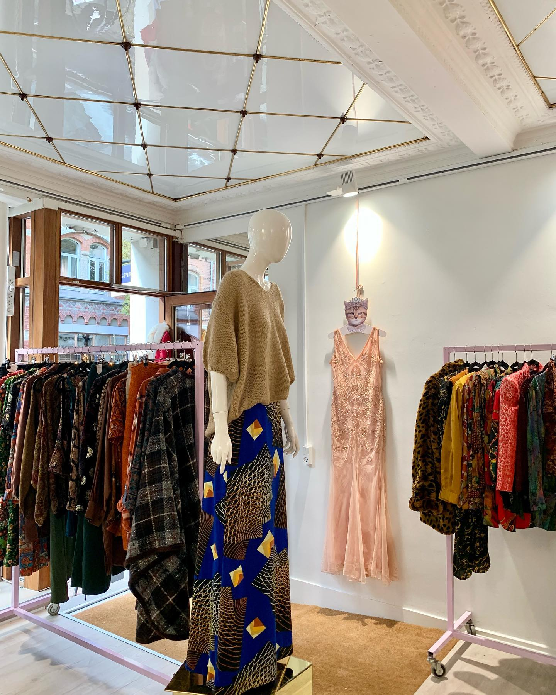

HISTORIEN BAG
MAGPIE LANE VINTAGE
Hej og velkommen til Magpie Lane Vintage!
Mit navn er Sita Linddahl.
Jeg driver til dagligt Magpie Lane Vintage og har gjort det lige siden 2012.
Ideen om Magpie Lane Vintage
Jeg er opvokset i Vancouver, hvor jeg som 19-årig åbnede min
egen butik.
Dengang sagde jeg, at det ville jeg aldrig igen, fordi
jeg følte jeg arbejdede for andre mennesker i stedet for mig selv.
Senere flyttede jeg til Herning og begyndte dog at savne at have min egen butik.
Derfor åbnede jeg en butik i et lille lokale, som jeg holde åbent 3 dage om ugen.
Mange elskede butikken, og efter mange forespørgsler
flyttede jeg i nye større lokaler og ansatte nogle flere.
Søgen efter lokale
Her kørte jeg butikken i nogle år, før jeg besluttede at flytte til Århus.
Her startede jeg i et lille lokale på kun 10 m2.
Grundet efterspørgslen fra kunder, beyndte jeg kort tid efter at kigge efter nye lokaler og fandt det perfekte sted i Mejlgade,
som gik super godt,
indtil corona ramte os alle.
Imens at corona desværre satte alt på stand-by fandt jeg nye perfekte lokaler på Guldsmedegade,
som er de lokaler du finder Magpie Lane Vintage i nu.
Så kom forbi vores fysiske butik i Guldsmedgade og sig hej, få fif, hjælp og inspiration - jeg står klar til at hjælpe dig.
Befinder du dig ikke tæt på Århus,
har du muligheden for at se vores store udvalg her på siden og reservere det tøj du ønsker!
-Sita Linddahl
 

Vidste du at...?
Magpie er engelsk og betyder skade på dansk og skader er kendt for godt at kunne lide ting der skinner.
Navnet Magpie Lane Vintage er inspireret af en gade i Oxford der hedder
Magpie Lane, hvor min far kommer fra.
Vejen bliver flittigt brugt af studerende,
som skal til og fra universitetet.
Man kan bruge udtrykket “Hun er en rigtig Magpie”
som en kompliment.